Список мнемоключей
Cписок всех ключей в системе c комментариями и пояснениями. Как ими пользоваться, сказано в разделе ключей
| № | Радикал | Картинка | Мнемоключ, комментарии и примеры |
|---|---|---|---|
| 1 | ⼂ | 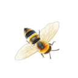 |
ПЧЕЛКА В зависимости от создаваемой мнемосценки ее можно заменять на другие мелкие предметы. 义 仞 |
| 2 | ⼧ | 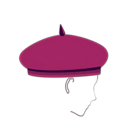 |
БЕРЕТ такой носят на голове 宗 寤 |
| 3 | 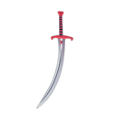 |
САБЛЯ ТУРЕЦКАЯ изогнутый вариант цифры 十 戎 |
|
| 4 | ⼁ | 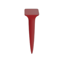 |
КОЛ шест, штырь и все из этой серии. 临 蓝 |
| 5 | ⼄ 乚 | 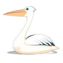 |
ПЕЛИКАН справо другой вариант радикала. Кодируем как "безголовый пеликан" или "рыболовный крючок". 乞 乿 |
| 6 | 人 𠆢 亻 |
ЧЕЛОВЕК справа другие варианты написания. Крайний вариант можно кодировать как "худой человек" 仄 债 佘 |
|
| 7 | 亠 | 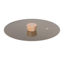 |
КРЫШКА ОТ КАСТРЮЛИ 亮 亢 |
| 8 | 丿 | 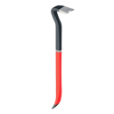 |
ЛОМИК-ФОМКА таким вскрывают закрытые двери 价 |
| 9 | 一 | 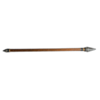 |
КОПЬЕ также это китайская цифра 1 丛 但 |
| 10 | 冖 | 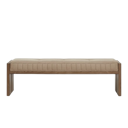 |
СКАМЕЙКА 冞 冥 |
| 11 | 厂 | 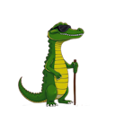 |
КРОКОДИЛЬЧИК СЛЕПОЙ потому что еще маленький. 压 厢 |
| 12 | 广 | 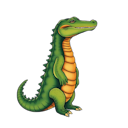 |
КРОКОДИЛ конечно, крокодил Гена 店 廓 |
| 13 | ⽧ | 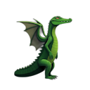 |
КРОКОДИЛ С КРЫЛЫШКАМИ нелепейшее создание 疢 瘖 |
| 14 | ⼹ | 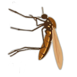 |
КОМАР 尋 寻 |
| 15 | 彑 |
ЛЫЖНИК это другое написание радикала "комар" 彔 |
|
| 16 | ⼯ | 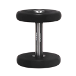 |
ГАНТЕЛЯ 巩 巯 |
| 17 | 勹 𠃌 | 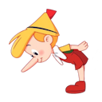 |
БУРАТИНО слишком любопытный для такого роста :) Справа безголовый буратино. 包 匐 局 |
| 18 | 刂 | 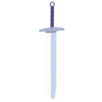 |
МЕЧ 剂 前 |
| 19 | 刀 乃 | 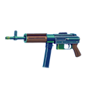 |
АВТОМАТ "ШМАЙСЕР" это другое написание радикала МЕЧ, в иероглифах встречаются оба варианта. А так как они визуально непохожи, пришлось их разделить. Справа - "поломанный автомат". 切 仞 秀 |
| 20 | 力 |  |
АВТОМАТ КАЛАШНИКОВА с прицелом 劳 勉 |
| 21 | 丁 | 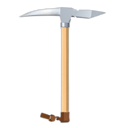 |
КАЙЛО или кирка, ледоруб. 厅 |
| 22 | 阝 | 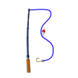 |
УДОЧКА 陔 |
| 23 | 了 | 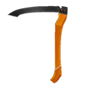 |
КОСА 疗 |
| 24 | 子 | 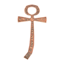 |
ЕГИПЕТСКИЙ ПОСОХ или крест-анх, странная такая штука, непонятная 孰 學 |
| 25 | ⼌ | 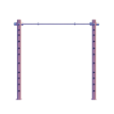 |
ТУРНИК в сценках можно заменять столом, где удобнее. 冈 |
| 26 | ⼉ | 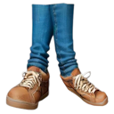 |
ПОЛОМАННАЯ НОЖКА волочется сзади, жалко до слез:) 允 兇 |
| 27 | ⼐ | 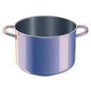 |
КАСТРЮЛЯ в зависимости от мнемосцены это может быть любая емкость кружка, стакан и т.д. 凼 函 |
| 28 | 尸 | 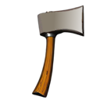 | ТОПОР 屆 屠 |
| 29 | 户 戶 | 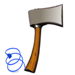 |
ЭЛЕКТРИЧЕСКИЙ ТОПОР полный бред :) Когда к простому радикалу добавляется какой-то штрих, черточка и чтобы не придумывать в этом случае отдельный мнемоключик, мы просто "апгрейдим" старый мнемоключ. Смотрите варианты с "казаком": "казак с саблей", "казак с ружьем" и т.д. 戾 戺 |
| 30 | ⼊ |
ВИГВАМ здесь живут индейцы, типа палатки 內 兩 |
|
| 31 | ⼙ | 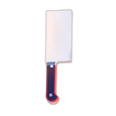 |
ТЕСАК 却 卻 |
| 32 | 㔾 | 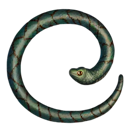 | ЗМЕЯ это другое написание радикала ТЕСАК 危 卺 |
| 33 | 匕 | 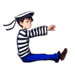 | МАТРОСИК танцующий танец "Яблочко" 此 化 |
| 34 | 比 | 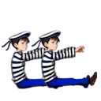 | МАТРОСИКИ 毘 毙 |
| 35 | ⼞ | 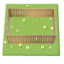 | ОГРАДА можно забор, изгородь 圂 圌 |
| 36 | 口 | 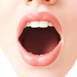 | РОТ отличается от предыдущего размером. В мнемосценках можно заменять любыми квадратными предметами, коробки, кубы и т.д. 咍 呜 咒 |
| 37 | 斤 | 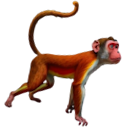 | ГИББОН макака, обезьяна, в общем 新 斧 |
| 38 | 厶 | КУЛЕК КОНФЕТ частый элемент иероглифов. Можно заменять на мешок или пакет, неважно с чем. 能 |
|
| 39 | 大 | ВЕЛИКАН 夭 夼 |
|
| 40 | ⼸ | 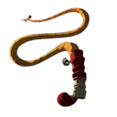 | КНУТ или хлыст, плетка 弭 弩 |
| 41 | ⼲ | 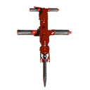 | ОТБОЙНЫЙ МОЛОТОК 幵 平 |
| 42 | ⼟ | РОСТОК ИЗ ЗЕМЛИ 坭 坐 |
|
| 43 | 士 | 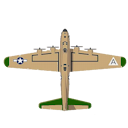 | БОМБАРДИРОВЩИК сравните с ⼟ 壶 壯 |
| 44 | 冫 | 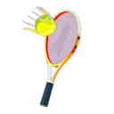 | ТЕННИСНАЯ РАКЕТКА 冶 凐 |
| 45 | 水 氵 | 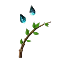 | ВОДА вариант справа лучше представлять как капли, брызги воды. 沲 汆 汯 彔 |
| 46 | 犬 犭 | 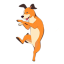 | СОБАЧКА вариант справа можно представлять в виде танцующей собачки Каштанки. 突 狈 |
| 47 | 乂 | КОСТИ в некоторых иероглифах можно ??? 凶 |
|
| 48 | 父 | 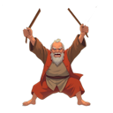 | ОТЕЦ с розгами 爸 爺 |
| 49 | 甘 | 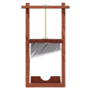 | ГИЛЬОТИНА такой штукой отрубали головы 甙 甝 |
| 50 | 廿 | 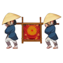 | ПАЛАНКИН в таком носили очень важных персон 度 |
| 51 | 几 | ГУСЕНИЦА 凯 凭 凰 |
|
| 52 | 小 | 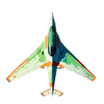 | МАЛЕНЬКИЙ САМОЛЕТИК нет, в самом деле, очень маленький самолетик 尒 尔 |
| 53 | 言 言 | КАСТРЮЛЯ С БЛИНАМИ некуда было сложить блины, а почему бы не положить их в кастрюлю :) Справа другое написание радикала. Этот радикал - традиционное написание радикала "маньяк" 詬 計 |
|
| 54 | 寸 | 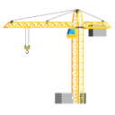 | ПОДЪЕМНЫЙ КРАН С КРЮКОМ 尉 封 寺 |
| 55 | 巾 | 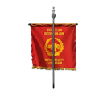 | ФЛАГ-ШТАНДАРТ наверное, такой был у римлян 帛 幏 |
| 56 | 方 | ФУТБОЛИСТ 旚 旁 |
|
| 57 | 殳 | 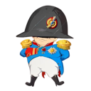 | НАПОЛЕОН тот самый толстенький и маленький 殶 殽 |
| 58 | ⼰ 已 | 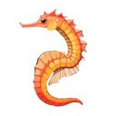 | МОРСКОЙ КОНЕК справа еще одно написание радикала. Отличаются между собой маленьким штришком. В мнемосценках можно кодировать как морская лошадь и морской конь 巹 起 |
| 59 | 巳 | 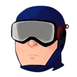 | ВОДОЛАЗ это другое написание радикала "морской конек" а так они взаимозаменяемы 匏 |
| 60 | 巴 | ОЧКАРИК 爬 |
|
| 61 | 文 | 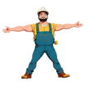 | СТРОИТЕЛЬ так уж сложилось - таджик 济 这 |
| 62 | 夂 | СТРАУС ЭМУ запомните, что страус без хвоста. 处 备 |
|
| 63 | 支 | КАЗАК в шароварах 攲 攳 |
|
| 64 | 攵 | ХВОСТАТАЯ ЦАПЛЯ Это другое написание радикала "казак с ружьем" 攻 故 敿 |
|
| 65 | 攴 | КАЗАК С РУЖЬЕМ 敁 敊 |
|
| 66 | 皮 | КАЗАК С САБЛЕЙ 皯 皰 |
|
| 67 | 夕 | КЕНГУРУ 多 夗 |
|
| 68 | 歹 | КЕНГУРУ С КОПЬЕМ 死 殡 |
|
| 69 | 变 | КАЗАЧИЙ АТАМАН в погонах, кителе и шароварах 变 |
|
| 70 | 又 | ПУЗО 反 取 |
|
| 71 | 爪 | ДЖИНСЫ Полная форма 爫 爬 抓 |
|
| 72 | 瓜 | ХВОСТ ЧЕРТА 瓢 瓟 |
|
| 73 | 女 | ДЕВУШКА закрепите за этим радикалом конкретный образ, можете представить свою знакомую подружку Машу, Олю, Свету... За счет этого мнемосценки лучше запомнятся. 姻 媐 |
|
| 74 | 礻 示 | ТОП-МОДЕЛЬ справа тот же радикал в другом написание, кодируйте его как "толстуха" :) 祂 祠 祟 禢 |
|
| 75 | 石 | САМОКАТ вижу, что на картинке велосипед, но как-то приклеился за этим радикалом именно самокат 硈 磨 |
|
| 76 | 日 | СОЛНЦЕ просто нужно так запомнить, хотя визуально нисколечко не похоже :) 昝 显 晗 |
|
| 77 | 白 | ХОЛОДИЛЬНИК белый такой, двухкамерный 百 皓 皙 |
|
| 78 | 占 | ТАНК 店 呫 |
|
| 79 | 古 | МОГИЛКА 苦 故 |
|
| 80 | 舌 | ЯЗЫК немножко скошенный набок 舐 舍 |
|
| 81 | 瓦 | СУДЬЯ в шапочке и парике 瓵 瓮 |
|
| 82 | 弋 | ВРАТАРЬ 试 |
|
| 83 | 斗 | ВРАТАРЬ-МУТАНТ это потому что у него две головы 斝 料 |
|
| 84 | 木 | ДЕРЕВО 栓 果 李 |
|
| 85 | 毛 | ПЕРО 毡 毞 毾 |
|
| 86 | 车 車 | ТЕЛЕГА справа традиционное написание радикала, кодируем как "старая телега". Также можно кодировать как "машина" 轨 轼 輻 軍 |
|
| 87 | 彳 | ПЮПИТР подставка для нот у музыкантов 彷 徥 |
|
| 88 | 行 | КОНСЕРВАТОРИЯ это там, где много пюпитров 衍 衖 |
|
| 89 | 才 | БЭТМЕН крутой такой супергерой 闭 |
|
| 90 | 央 夬 | ШТАНГИСТ справа "однорукий штангист" 英 快 |
|
| 91 | 豆 | СТАКАНЧИК такой пластмассовый складной 豉 豊 |
|
| 92 | 门 | ДВЕРЬ а в верхнем углу это звонок 闭 间 |
|
| 93 | 門 | ДВЕРЬ В САЛУН Салун - это ковбойский бар. Предыдущий радикал в традиционном написании. В составе других иероглифов встречаются оба, поэтому пришлось их разделить 閟 閵 |
|
| 94 | 网 罒 | СЕТКА ТЕННИСНАЯ справа другое написание радикала, кодируется, например, как сетка для настольного тенниса. 罗 罷 |
|
| 95 | 尢 无 | СТАРЫЙ МОНАХ у него ножка волочется, поэтому и старый:) Второй вариант - это "старый монах с копьем" 尪 抚 |
|
| 96 | 月 | ЛУНОЛИКАЯ НЕФЕРТИТИ с короной, это в Египте была царица такая 期 望 |
|
| 97 | 穴 | БАБА С КОРОМЫСЛОМ справа другое написание 窋 空 穷 穵 |
|
| 98 | 皿 | БАТАРЕЯ радиаторная, чугунная, которая обогревает зимой 盔 盤 盖 |
|
| 99 | 血 | ТОРТ со свечкой 衁 衈 |
|
| 100 | 气 | МОТОЦИКЛИСТ 汽 氣 |
|
| 101 | 米 | РИС 籵 粢 类 |
|
| 102 | 廾 | НОЖНИЦЫ визуально мало общего, зато радикал похож на букву "Н" - ножницы 馵 |
|
| 103 | 开 | ЯПОНСКИЕ ВОРОТА тории, стоят перед синто святилищем 形 |
|
| 104 | 爿 丬 | ЗУБРИЛА ботан, справа другое написание радикала 牄 将 |
|
| 105 | 片 | КАРАТИСТ 牊 版 |
|
| 106 | 立 | АТЛЕТ сидит на шпагате 竑 竟 竖 |
|
| 107 | 风 風 | ХОККЕЙНЫЕ ВОРОТА справа традиционное написание радикала. 飑 颱 飀 飙 |
|
| 108 | 耳 | УХО 聐 聂 耷 |
|
| 109 | 衣 衤 | КИМОНО справа другое написание радикала, встречаются часто оба. Можно одно кодировать как женское кимоно, другое как мужское. Также радикал справа можно кодировать как "трансвестит", похож на радикал "топ-модель", только со штучкой:) 衵 裂 裞 袁 表 |
|
| 110 | 氏 | МАФИОЗИ с автоматом 氐 婚 |
|
| 111 | 京 | МУДРЫЙ КИТАЙСКИЙ СТАРИЧОК с усами Фу Манчу и козлиной бородкой 影 惊 |
|
| 112 | 马 馬 | ЛОШАДЬ можно запомнить по очертаниям парящей лошади. Справа традиционное написание радикала. Кодировать как "старая лошадь" 驭 骆 騃 駑 馵 |
|
| 113 | 鸟 鳥 | ПТИЦА справа традиционное написание радикала. Кодировать как "старая птица" 鸡 鸳 鳭 鴄 |
|
| 114 | 谷 | КРОТ задравший мордочку 容 |
|
| 115 | 也 | РЫБАК рыбак с поломанной удочкой или с удочкой на рогатине 地 |
|
| 116 | 革 | ЧЕРТИК в шпагате 靸 鞮 鞶 |
|
| 117 | 黄 | КРЕСТОНОСЕЦ 黈 黉 |
|
| 118 | 足 ⻊ | ДЕД МАЗАЙ справа другое написание радикала 促 踐 |
|
| 119 | 疋 𤴔 | ЖЕНА МАЗАЯ справа другое написание радикала 疐 疏 |
|
| 120 | 心 忄 | СЕРДЦЕ справа другое написание. В мнемофразах кодировать как "маленькое сердце". 思 怕 愛 总 悝 |
|
| 121 | 手 扌 | РУКА справа другое написание радикала, кодируем как рука без пальца 扬 挐 揫 打 |
|
| 122 | 而 | МИНА 耑 耐 |
|
| 123 | 面 | СУПЕР ДИНАМИТ динамит и взрыватель в одном флаконе, стрелка уеб.метра присутствует |
靦 靥
|
| 124 | 飞 飛 | КОЛИБРИ справа традиционное написание радикала, используется редко |
|
| 125 | 匚 | ШТЕПСЕЛЬ 区 區 |
|
| 126 | 丩 | ВИЛЫ 叫 收 |
|
| 127 | 专 | СНОУБОРДИСТ 转 |
|
| 128 | 身 | ВОЕВОДА 躲 躽 |
|
| 129 | 讠 | СЕКСУАЛЬНЫЙ МАНЬЯК эксгибиционист, со стояком 访 认 |
|
| 130 | 舟 丹 | БОСС БИЗНЕСМЕН с чубчиком и в галстуке, справа - он же без галстука и чубчика 舢 艋 坍 |
|
| 131 | 毋 | СТЕКОЛЬЩИК 毐 |
|
| 132 | 母 | ТЕННИСИСТЫ это другое написание предыдущего радикала 每 |
|
| 133 | 长 镸 長 | ВОЖДЬ справа традиционное написание радикала, кодируем как "старый вождь" 张 镺 張 |
|
| 134 | 艮 | ЗНАМЕНОСЕЦ 艰 银 良 |
|
| 135 | 靑 | ЭЛЕКТРИЧКА 靚 靖 |
|
| 136 | 田 | ПОЛЕ 甸 畲 畾 |
|
| 137 | 骨 | КУРАНТЫ 3-этажная башня с часами 髅 骻 |
|
| 138 | 里 | ИНДУС В ЧАЛМЕ 野 量 |
|
| 139 | 黑 | ЙОГ йог, факир на углях или гвоздях 黠 黨 黴 |
|
| 140 | 山 | ГОРЫ 岨 岩 嵇 |
|
| 141 | 见 見 | СТАРЫЙ БОМЖ со сломанной ножкой, справа традиционное написание радикала - "бомж в полосатой коробке" 览 觇 親 覛 |
|
| 142 | 贝 貝 | СИРОТА ножки целые, живет в коробке, справа традиционное написание радикала "сирота в полосатой коробке" 负 责 買 貹 賏 |
|
| 143 | 页 頁 | РИМСКИЙ ЛЕГИОНЕР справа традиционное написание радикала - "легионер с полосатым щитом" 頄 颍 頇 |
|
| 144 | 高 | МАНДАРИН это важный китайский чиновник 髜 |
|
| 145 | 电 | ЭЛЕКТРИЧЕСКИЙ СКАТ действительно может ударить электрическим током 龟 |
|
| 146 | 习 | БРАТ-БЛИЗНЕЦ |
|
| 147 | 羽 羽 | ЗЛЫЕ БЛИЗНЕЦЫ справа другое написание радикала 羿 翜 翕 |
|
| 148 | 去 | КОЛБА 脚 法 |
|
| 149 | 䒑 | АИСТ в полете 前 |
|
| 150 | 齿 齒 | БРОНЕВИК это такая военная машина. Спереди - пулемет, сзади - антенна, внутри - экипаж. Справа традиционное написание радикала, кодируем как "старый броневик" 龀 齙 |
|
| 151 | 矢 | МУШКЕТЕР с пером на шляпе 知 矫 矣 |
|
| 152 | 缶 | МУШКЕТЕР-ДУРАЧОК 缸 缹 罂 |
|
| 153 | 辶 | МАРКИТАНТКА хм...девица легкого поведения 边 迻 迿 迈 |
|
| 154 | 廴 | НЕВЕСТА 延 建 |
|
| 155 | 雨 | ДОЖДИК капает за окном 雪 需 |
|
| 156 | 禾 | ДАМА ПИКОВАЯ 秃 程 稷 |
|
| 157 | 彡 | КОГТИ 彭 影 彦 |
|
| 158 | 鼠 | МЫШЬ 鼭 鼬 |
|
| 159 | 韦 韋 | КЛЕЩ справа традиционное написание, кодируем "старый клещ" 韧 衛 韎 韏 |
|
| 160 | 巛 川 | РЕКА справа другое написание радикала 巡 巢 州 |
|
| 161 | 两 | ЕВРЕЙ С ПЕЙСАМИ ну как же нам без пары евреев:) 辆 |
|
| 162 | 𤇾 | БОКСЕРЫ может братья Кличко :) 勞 |
|
| 163 | 龸 | ТИАРА корона такая 常 尝 |
|
| 164 | 肀 聿 | ПИШУЩАЯ РУЧКА справа традиционное написание, кодируем как "перьевая ручка" 唐 肆 |
|
| 165 | 亼 | КРЫША ДОМА 偷 |
|
| 166 | 𥫗 | АВТОМАТЧИК, ФАШИСТ 筤 笸 蓝 |
|
| 167 | 龴 | ФУРАЖКА 予 |
|
| 168 | 火 灬 | КОСТЕР справа другое написание этого радикала, можно кодировать как просто ОГОНЬ или УГЛИ 烛 热 炃 焱 烋 |
|
| 169 | 𠂉 | ТЯПКА мотыга, кетмень, кому как удобнее 斿 旃 |
|
| 170 | 辛 | ПУГАЛО 辞辩 |
|
| 171 | 𠂇 | КАТАНА меч японский с ножнами 有 |
|
| 172 | СВЕРЧОК очень воспитанный и культурный, играет на скрипке 在 |
||
| 173 | 臼 | СЛОМАННАЯ ТУМБОЧКА 臿 舁 舀 臾 |
|
| 174 | 屮 屮 | КАКТУС справа другое написание 屰 |
|
| 175 | 臣 巨 | КОСМОЛЕТ справа легкий космолетик 臥 臩 |
|
| 176 | 艹 | КОЛЮЧАЯ ПРОВОЛОКА можно еще терновый венок, обычно этот радикал пишется сверху иероглифа. 芀 芺 茔 |
|
| 177 | 髟 | ВОЛОСЫ левая часть - вождь 髡 髻 |
|
| 178 | 西 ⻃ 酉 | МОЛОДОЙ ГРУЗИН и крайний правый - старый грузин 洒 要 醅 |
|
| 179 | 𠃓 | КОНЕК ГОРБУНОК ууу...как его скрючило :) 场 |
|
| 180 | 止 上 | ПОГРАНИЧНИК С СОБАКОЙ справа пограничник без собаки 正 此 歪 歭 |
|
| 181 | 羊 ⺷ ⺶ | БАРАН справа другие написания радикала 羔 美 羳 羖 |
|
| 182 | 牛 | КОРОВА 牝 犁 牟 |
|
| 183 | 豕 | СВИНЬЯ а такой красивый иероглиф :) 象 豬 |
|
| 184 | 豸 | ПРИДВОРНЫЙ в поклоне 豻 貓 |
|
| 185 | 鱼 魚 | РЫБКА справа традиционное написание радикала, "старая рыбка" 魡 鲨 |
|
| 186 | 鬼 | ПРИЗРАК 魆 鬿 |
|
| 187 | 用 | БАБУШКА НЕФЕРТИТИ 甬 甮 |
|
| 188 | 由 | ЧЕМОДАН 油 |
|
| 189 | 典 | БАУЛ ЧЕЛНОКА такой весь клетчатый 典 |
|
| 190 | 麻 | КРОКОДИЛ В КОНОПЛЕ 磨 |
|
| 191 | 幺 乡 | НОС С ГОРБИНКОЙ справа другое написание радикала 幼 鄉 |
|
| 192 | 纟 糹 | СОПЛИВЫЙ НОС справа традиционное написание радикала, встречаются часто оба. 红 紋 素 |
|
| 193 | 耒 | ПЛУГ 耙 耠 |
|
| 194 | 目 | ЛЕСТНИЦА 盱 看 瞿 |
|
| 195 | 乍 | РАСЧЕСКА 作 |
|
| 196 | 香 | ВЕДЬМА состоит из мнемоключей "дама пиковая" и "солнце" 馣 馧 |
|
| 197 | 音 | ИКАР состоит из мнемоключиков атлет и солнце. 韶 |
|
| 198 | 隹 | ЗУБАСТИК ПТЕРОДАКТЕЛЬ 难 谁 |
|
| 199 | 戈 | ТХЭКВОНДИСТ типа каратиста, только лупит в основном ногами 我 饿 |
|
| 200 | 爫 | ЛАПКА тигра, кошки или медведя 爱 摇 |
|
| 201 | フ | КОЛЕНКА 今 |
|
| 202 | 非 | АНТЕННА 罪 |
|
| 203 | ⺈ | ЧУБЧИК 角 危 |
|
| 204 | 生 | ЯКУДЗА такой японский мафиози 甡 姓 |
|
| 205 | 牙 | ГРАБИТЕЛЬ с кинжалом в плаще 牚 |
|
| 206 | 耂 老 | ПРЫГУН БУБКА справа другое написание радикала, кодируем как "прыгун-матросик", так как снизу сидит матросик 者 姥 |
|
| 207 | 头 | ГОЛОВА изображение затянувшего 2 косяка укурка, у которого от прихода текут по лицу пот, сопли и слюна. 买 |
|
| 208 | 虫 | МУХА 虺 蛪 |
|
| 209 | 中 | СТРЕКОЗА "муха" без хвоста 钟 |
|
| 210 | 鼻 | КИРПИЧИ ДЛЯ КАРАТИСТА 齀 鼾 |
|
| 211 | 亡 | ДИНОЗАВР 忙 忘 |
|
| 212 | 龶 | ТРИПЛАН это самолет с тремя крыльями друг над дружкой 毒 |
|
| 213 | 王 | КОРОЛЬ 玡 珨 国 |
|
| 214 | 共 其 | МОСТ через реку простой одноуровневый справа мост в 3 пролета 異 期 |
|
| 215 | 早 | БРИТВА 章 |
|
| 216 | 及 | МАМОНТ 吸 |
|
| 217 | 龙 龍 | ДРАКОН справа традиционное написание радикала 袭 籠 |
|
| 218 | 业 | КАМЫШИ 亚 |
|
| 219 | 走 | ЛЕТУЧИЙ ГОЛЛАНДЕЦ 赸 趕 |
|
| 220 | 久 ス | МАРАБУ такая африканская птица, справа "безголовый марабу" 畝 轻 |
|
| 221 | 食 飠⻞ | КИТАЙСКИЙ РЕСТОРАН справа как радикал 飧 餇 餘 |
|
| 222 | 饣 | ЖОКЕЙ это упрощенное написание предыдущего радикала 饴 饱 |
|
| 223 | 金 | ЗОЛОТАЯ ПАГОДА 釕 鋈 |
|
| 224 | 钅 | КОРОЛЕВСКИЙ ЖОКЕЙ это упрощенное написание предыдущего радикала 钇 钊 |
|
| 225 | 赤 亦𰁜 | МИНИСТР справа замминистр без шапки 赧 迹 弯 |
|
| 226 | 兆 | КОНЬКИ 跳 |
|
| 227 | 与 与 | ВЕЛОСИПЕДИСТ справа написание другим шрифтом 写 |
|
| 228 | 至 | СКЕЛЕТ-РЫБКА 致 臸 臷 |
|
| 229 | 無 | КОЛИЗЕЙ это арена в Риме, где рубились гладиаторы 舞 |
|
| 230 | 丌 兀 | ТАБУРЕТ справа "поломанный табурет" 亓 尧 |
|
| 231 | 且 | ПОГРАНИЧНЫЙ СТОЛБИК 抯 |
|
| 232 | ㄥ | ЛОКОТЬ 东 |
|
| 233 | 亥 | ТАТУИРОВКА 侅 |
|
| 234 | ПИСТОЛЕТ-БЛАСТЕР 可 |
||
| 235 | 㠯 | ВЫДВИНУТЫЕ ПОЛКИ в шкафчике 官 |
|
| 236 | ⺧ | МАУГЛИ 告 |
|
| 237 | ⺌ | ЛАСТОЧКА 光 当 |
|
| 238 | 𫩏 | ОЧКИ 象 |
|
| 239 | ДОРОГА 兵 |
||
| 240 | ЛОДКА 之 |
||
| 241 | 分 | ЮБОЧКА 份 |
|
| 242 | 丷 | ГЛАЗКИ, РОЖКИ, УСИКИ и тому подобное 併 兑 |
|
| 243 | 八 | НОЖКИ, ЛАПКИ, ПАЛЬЧИКИ и тому подобное 帜 |
|
| 244 | 𠀉 | БУКВА Е 印 |
|
| 245 | 卜 | СУЧОК, ЧУРКА, ЧУРБАН или, на что еще там похоже 扑 |
|
| 246 | ㇒ | ЛИСТИК 乎 币 |
|
| 247 | 乛 | БАГОР 买 |
|
| 248 | ПУЛЕМЕТ 虍 |
||
| 249 | 龷 | ШЛЕМ 散 |
|
| 250 | 井 | РЕШЕТКА 讲 |